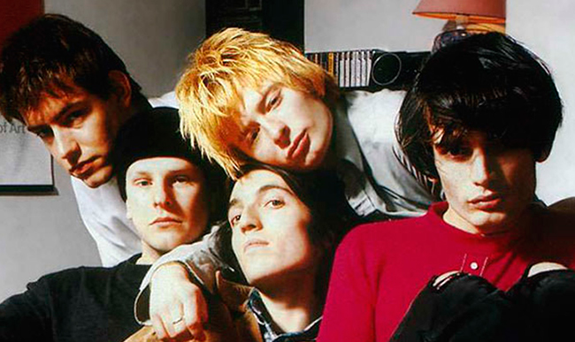

LA BANDA
Radiohead es una banda británica originaria de Abingdon-on-Thames, Inglaterra, formada en 1985. Lanzó su primer sencillo, «Creep», en 1992. Si bien la canción fue en un comienzo un fracaso comercial, se convirtió en un éxito mundial tras el lanzamiento de su álbum debut, Pablo Honey (1993) debido a el "boom" comercial del Rock alternativo y BritPop, estilos que la banda ejecutaba en aquella primera.
INTEGRANTES
Colin Greenwood
- bajo
- teclados
- contrabajo
Johnny Greenwood
- guitarra
- teclados
- sintetizador
Thom Yorke

- voz principal
- guitarra rítmica
- piano
Phil Selway
- baterria
- percusión
- voz
Ed O'Brien
- guitarra
- voz
- percusion